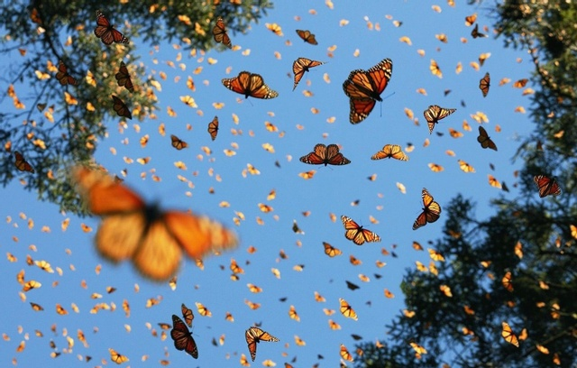

Beauty of Butterflies
Monarch Butterfly

About The Monarch Butterfly
Monarchs are large, beautifully colored butterflies that are easy to regconize by their striking orange, black, and white markings.
Where do Monarchs live?
Monarch butterflies live in North, Central and South America as well as Australia, some Pacific Islands, India, and Western Europe.
Female Monarchs have:
- Noticably thicker wing veins
- Spotless hind wings
- Smaller bodies
Male Monarchs have:
- Smaller wing viens
- A black spot on each hind wing
- Bigger bodies